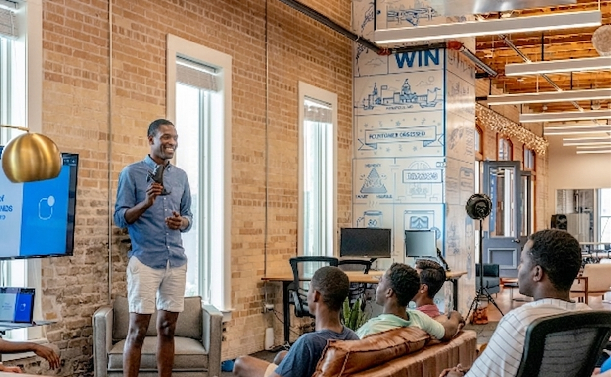
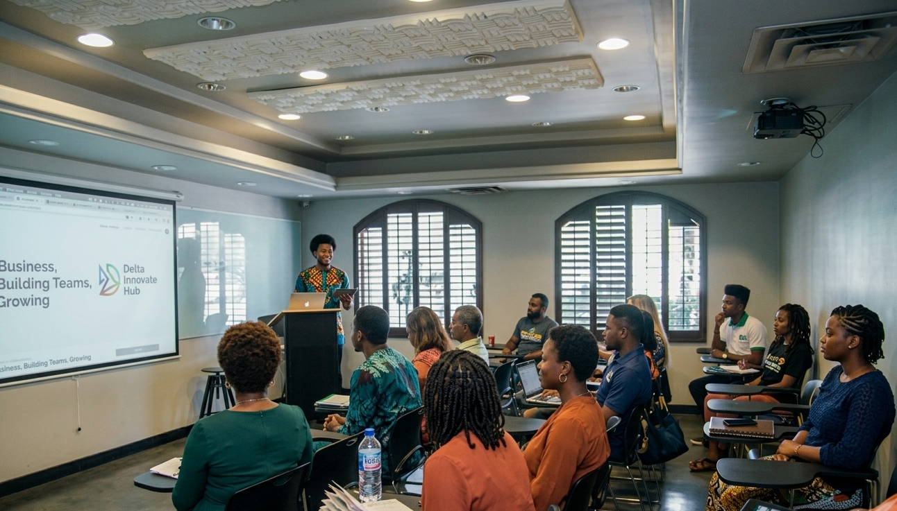

Delta's First True People Power Movement. Delta, the time has come a time to rise beyond excuses, reject recycled leadership, and take back our future.
I am Chief Anthony Tosan Prest: A son of the soil, a builder of businesses, a creator of jobs, and a man who has seen the world and returned home with a mission: to rebuild Delta State from the ground up. To create real jobs, real wealth, and real dignity for our people. To lead with courage, competence, and conscience.
I am not coming to learn on the job. I am coming to deliver results from Day One. From Warri to Asaba, Sapele to Agbor, thousands of Delta sons and daughters are standing up. We are not a party machine. We are the people.
Our network of community volunteer centers serves as the organizing backbone of the movement, giving every Delta citizen a local hub to register, train, and mobilize.
Dedicated physical spaces in every LGA where volunteers gather, strategize, and receive training on voter outreach and canvassing.
Every registered volunteer receives an official barcoded ID card, verifying your identity, your ward, and your role in the movement.
Local Government Organizing Hubs coordinate grassroots activity, ward by ward canvassing schedules, and community engagement events.

Register today and receive your volunteer ID. Join thousands of Delta citizens who are taking action for real change.

Real change doesn't happen in the corridors of power alone — it happens in the streets, in the wards, in every community where ordinary citizens organize and take action.
By volunteering, you become a frontline force in this historic movement. You are the message. You are the movement.
Why Volunteer →